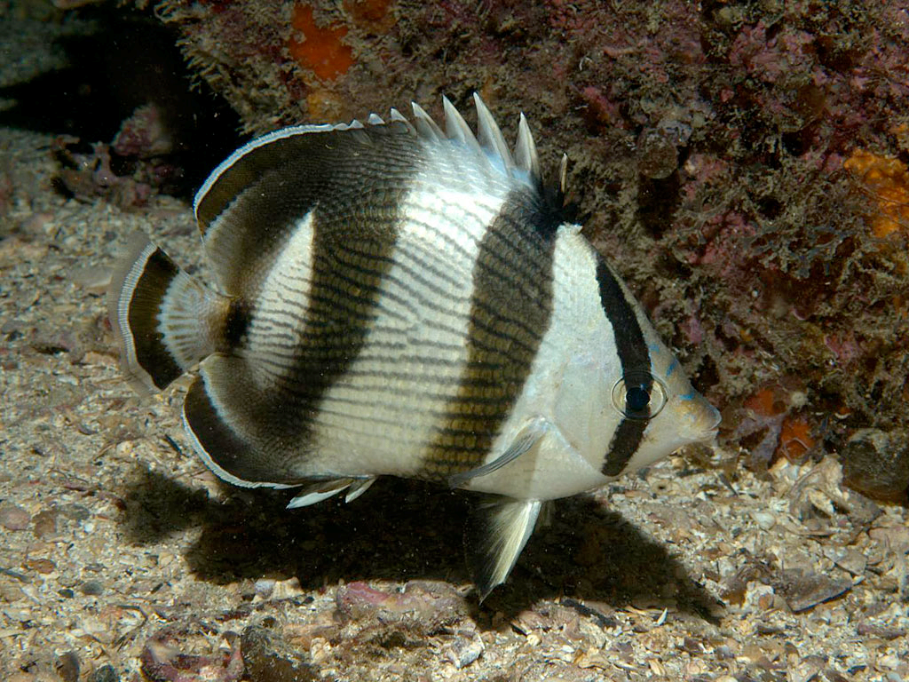

Select Terminology
- Sessile lifestyle
- benthic environment vs. pelagic
- radioles vs radula
- Substrate
- Nematocyst
- Radula
- Scyphozoa
- Anthozoa
- Choanocytes
- Archeocytes
- Colloblasts
- Madreporite
- Pelagic
- Countershading
- Tropicalization
- Facilitation
Questions
- Define science, ecology, driving agent, and response variable. What are the 5 different approaches in the scientific method? Provide a one-sentence definition of each approach. List a strength and weakness for each method?
- What is a trophic cascade? Describe the trophic cascade that regulates plants in southern U.S. salt marshes. How is drought thought to interact with this indirect species interaction?
- What are the main climate change drivers affecting marine foundation species, and how do these drivers interact with other anthropogenic stressors?
Invertebrates
- What is a foundation species? Name 4 invertebrate taxa that can act as foundation species. What characteristics do these taxa have in common that allow them to rise to such prominence in marine systems?
- Foundation species: Species that create or modify habitats, benefiting other organisms and enhancing ecosystem stability.
- Examples of invertebrate foundation species:
- Corals (Cnidaria)
- Oysters (Bivalvia)
- Kelp-associated amphipods (Crustacea)
- Tube worms (Polychaeta)
- Common characteristics:
- Ability to modify the environment (reef-building, bioturbation)
- Support complex food webs
- Resilience to environmental stress
- Create habitats used by many other species.
- Compare feeding in sea stars and sea cucumbers. Describe 2 things they have in common and 2 that are different.
- Commonalities:
- Both belong to the phylum Echinodermata.
- Both use external parts for feeding (e.g., tube feet or tentacles).
- Differences:
- Sea stars: Carnivorous, evert stomach to digest prey externally.
- Sea cucumbers: Deposit or suspension feeders, use tentacles to collect particles.
- Commonalities:
- ⭐ How is it that we are more closely related to blob-like sea squirts than highly complex insects?
- Reason: Both sea squirts and humans are part of the phylum Chordata.
- Common chordate traits:
- Notochord (at least in embryonic stages).
- Dorsal nerve cord.
- Pharyngeal slits.
- Insects belong to the phylum Arthropoda, which is more distantly related.
Mollusca & Annelids: Clams, Octopus, Segmented Worms
- What are the 4 major classes in the phylum Mollusca? Choose 3 of these classes and compare and contrast 3 adaptations each has evolved from a common body plan for either a life in the benthic or pelagic environment.
- Classes:
- Gastropoda (snails, slugs)
- Bivalvia (clams, mussels)
- Cephalopoda (octopuses, squids)
- Polyplacophora (chitons)
- Adaptations (Gastropoda):
- Shell for protection.
- Radula for scraping food.
- Adaptation to terrestrial environments.
- Adaptations (Bivalvia):
- Two-part shell for defence.
- Filter feeding with siphons.
- Sessile lifestyle in benthic environments.
- Adaptations (Cephalopoda):
- Tentacles for prey capture.
- Advanced nervous system.
- Jet propulsion for swimming.
- Adaptations in Polyplacophora (chitons) Adaptations for Benthic Life:
- Multiple shell plates: Flexible, allows chitons to conform to uneven surfaces like rocks.
- Strong foot for adhesion: Helps resist wave action and predators in intertidal zones.
- Radula with magnetite-enriched teeth: Scrapes algae off hard surfaces more effectively.
- Classes:
- What are 3 characteristics that distinguish annelids from mollusks and 3 characteristics they have in common?
- Differences:
- Annelids: Segmented bodies. Closed circulatory system.
- Mollusks: Often have shells. Usually open circulatory system.
- Commonalities:
- Bilateral symmetry.
- Presence of a coelom.
- Trochophore larvae in some species.
- protostome clade, in which the mouth develops before the anus during embryonic development.
- Differences:
- Describe 3 unique adaptations that annelids have evolved for tube dwelling versus errant lifestyles.
- Tube-dwelling annelids:
- Build protective tubes (calcareous, mucous, or sandy).
- Filter feeding using radioles.
- Reduced locomotion.
- Errant annelids:
- Parapodia for active movement.
- Well-developed sensory organs.
- Predatory or scavenging lifestyle.
- Tube-dwelling annelids:
- What is a radula, and which Phylum is it unique to? Describe 4 different ways it has evolved for specialized use.
- Radula: A ribbon-like structure with teeth used for feeding.
- Unique to: Phylum Mollusca.
- Specialized uses:
- Scraping algae (Gastropoda).
- Drilling into shells (some snails).
- Cutting prey (Cephalopoda).
- Filtering plankton (some bivalves).
Cnidaria, Porifera: Corals, Jellyfish, Sponges
- Corals are successful benthic animals that can monopolize space. Discuss 3 reasons that might explain why corals instead of sponges are the dominant space-holding invertebrates on most tropical, shallow water reefs. Why do sponges tend to dominate reefs greater than 100m in depth? Hint: sponges also dominate deep underneath ledges on coral reefs.
- Corals:
- Photosynthetic symbionts (zooxanthellae) aid in energy production.
- Rapid skeleton growth to monopolizes space.
- Strong competition for light in shallow waters.
- Sponges:
- Efficient filter feeders, adapted to low-light conditions.
- Can survive in nutrient-poor environments.
- Often dominate deeper reefs or under ledges.
- Corals:
- Compare and contrast the feeding strategies used for prey capture and subjugation used by a hard coral, sponge, and sea walnut (ctenophore), with specific mechanisms.
- Hard Coral (Scleractinia):
- Feeding Strategy: Suspension feeder using tentacles and nematocysts.
- Prey Capture Mechanism: Uses tentacles to capture plankton and small particles from the water. Specialized stinging cells called nematocysts on the tentacles release toxins to immobilize prey.
- Subjugation Mechanism: Once prey is immobilized, the tentacles bring the food to the mouth, where it is digested in the gastrovascular cavity.
- Sponge (Porifera):
- Feeding Strategy: Filter feeder using choanocytes (collar cells).
- Prey Capture Mechanism: Water is drawn into the sponge through tiny pores (ostia) and filtered through choanocytes, which have flagella that create water current. Microorganisms and organic particles are trapped in the mucus on the choanocytes’ collars.
- Subjugation Mechanism: The trapped particles are engulfed by the choanocytes via phagocytosis, and nutrients are distributed throughout the sponge by amoeboid cells.
- Sea Walnut (Ctenophore):
- Feeding Strategy: Predatory suspension feeder using colloblasts.
- Prey Capture Mechanism: Uses specialized sticky cells called colloblasts on its tentacles to capture zooplankton and small prey. Tentacles extend and sweep through the water, ensnaring prey with the sticky colloblasts.
- Subjugation Mechanism: Once captured, the tentacles retract, and the prey is moved toward the mouth, where it is swallowed and digested. Comparison and Contrast:
- Hard Coral (Scleractinia):
- Similarities:
- All three organisms are suspension feeders, relying on waterborne prey or particles.
- Each has specialized cells (nematocysts, choanocytes, colloblasts) adapted to capture prey.
- Differences:
- Coral uses toxins and stinging cells (nematocysts) for active prey immobilization.
- Sponges rely on passive filtering through choanocytes, with no active predation or immobilization.
- Sea walnuts use sticky colloblasts to trap prey without stinging or toxins.
- Hard corals and sea walnuts are more active in prey capture, while sponges passively filter water for nutrients.
- Compare and contrast alternation of generation and polymorphism in the phylum Cnidaria. Give specific examples of each using specific species.
| Aspect | Alternation of Generations | Polymorphism |
|---|---|---|
| What it involves | Alternating between polyp (asexual) and medusa (sexual) stages. | Different specialized forms (zooids) in a colony. |
| Occurs in | Species like jellyfish and some hydrozoans. | Mostly in colonial cnidarians (e.g., siphonophores). |
| Reproductive role | Involves both asexual and sexual reproduction. | Different zooids may specialize in reproduction, feeding, or defense. |
| Purpose | Facilitates life cycle completion across habitats (benthic/pelagic). | Allows efficient division of labour within a colony. |
| Example species | Moon jelly (Aurelia aurita). | Portuguese man o’ war (Physalia physalis). |
- Alternation of generations enables individual cnidarians to switch between sessile and free-swimming forms, maximizing reproductive success and habitat utilization.
- Polymorphism enhances the efficiency of colonial life by assigning specific tasks (feeding, defense, reproduction) to different zooids within the colony.
- Together, these strategies exemplify the diverse life history adaptations that cnidarians have evolved to thrive in marine environments.
- Define bipartite life cycle. Describe the bipartite life cycle in 3 different species each occurring in a different phylum. Also, describe at least 3 alternative hypotheses that potentially led to the evolution of the bipartite life history strategy in many marine organisms.
- Bipartite life cycle: Life stages split between planktonic larval stage and benthic or adult stage.
- Examples:
- Corals (Cnidaria): Planula larvae and adult polyp.
- Sea urchins (Echinodermata): Pluteus larvae and adult.
- Annelid worms: Trochophore larvae and benthic adult.
- Hypotheses for evolution:
- Reduced intraspecific competition between life stages.
- Increased dispersal opportunities for larvae.
- Adaptation to different environmental conditions.
- Compare and contrast the feeding behavior and skeletons of Porifera, Echinodermata, and Cnidaria.
- Porifera (sponge):
- Feeding: Filter feeders, capture particles via choanocytes.
- Skeleton: Spicules or spongin fibers.
- Echinodermata (stars, urchins, cucumbers):
- Feeding: Varies (e.g., predation, grazing, deposit feeding).
- Skeleton: Calcareous endoskeleton with ossicles.
- Cnidaria:
- Feeding: Use nematocysts to capture prey.
- Skeleton: Calcium carbonate skeleton (in corals).
- Porifera (sponge):
Crustaceans
- Describe the process of molting in blue crabs. What are 3 advantages and 3 disadvantages of having an exoskeleton on top of your epidermis.
- Molting Process in Blue Crabs:
- Premolt (preparation): The crab absorbs calcium from the old shell and stores it internally. A new, soft exoskeleton forms underneath.
- Molting (ecdysis): The old shell splits, and the crab crawls out. The new exoskeleton is soft and pliable.
- Postmolt (expansion): The crab absorbs water to expand its size, allowing space for future growth.
- Hardening: The new shell hardens and calcifies over several days.
- Advantages of an Exoskeleton:
- Provides protection from predators and environmental damage.
- Acts as a barrier to water loss, crucial in aquatic and intertidal environments.
- Offers structural support for muscle attachment, aiding movement.
- Disadvantages of an Exoskeleton:
- Limits growth, requiring the crab to molt frequently.
- During molting, the crab is vulnerable to predation.
- Exoskeleton production is energetically expensive.
- Molting Process in Blue Crabs:
- Do you think crustaceans or insects have been more successful over earth’s history? Defend your answer in 4-5 sentences.
- Insects are generally more successful than crustaceans.
- Insects dominate terrestrial environments with vast species diversity and adaptations like flight and metamorphosis.
- Crustaceans thrive in aquatic habitats, but insects have spread across more ecological niches.
- Insects have evolved highly complex social systems (e.g., ants, bees), which have contributed to their success.
- Both groups are highly successful, but insects’ global distribution and diversity make them more influential overall.
- Insects are generally more successful than crustaceans.
Vertebrates
- Name three sensory capabilities that marine vertebrates have that we don’t (or barely have) and explain how each one works. Use drawings if that is helpful in your explanation.
- Ecolocation
- Speak: Phonic lips create sound → Melon amplifies noise
- Listen: Lower jaw is earbone → brain interprets sound
- Electroreception (sharks, rays):
- Detects electric fields generated by other animals’ muscle movements.
- Works through ampullae of Lorenzini—gel-filled pores that sense electrical signals.
- In the ampullae there are receptor cells with potassium-calcum pumps
- Lateral Line System (fish, amphibians):
- Detects water movement and vibrations around the animal.
- Consists of sensory hair cells embedded in canals along the body which is connected to the outside seawater

- Ecolocation
- Describe thermoregulation in sea otters, great white sharks, walruses, blue whales, green turtles, and Nassau groupers. Which of these species can tolerate the greatest range of temperatures, and why is that the case?
| Species | Thermoregulation Strategy |
|---|---|
| Sea Otters | Dense fur traps air for insulation. |
| Great White Sharks | Countercurrent heat exchange to retain warmth. |
| Walruses | Blubber for insulation in cold waters. |
| Blue Whales | Blubber maintains body temperature in cold oceans. |
| Green Turtles | Ectothermic; bask to regulate body temperature. |
| Nassau Groupers | Ectothermic; prefer warm waters. |
- Most temperature-tolerant: Great white sharks, due to their endothermic abilities and countercurrent heat exchange.
Turtles
- Give the common and scientific names of all the known sea turtle species. Compare and contrast feeding behavior in green turtles vs. loggerheads, giving 3 examples of how they are similar and 3 examples of how they are different. How is the digestive track of each adapted to their specific diets?
- Species:
- Loggerhead (Caretta caretta)
- Green turtle (Chelonia mydas)
- Hawksbill (Eretmochelys imbricata)
- Leatherback (Dermochelys coriacea)
- Kemp’s ridley (Lepidochelys kempii)
- Olive ridley (Lepidochelys olivacea)
- Flatback (Natator depressus)
- Feeding behavior
- Similarities:
- Both are herbivorous or omnivorous as juveniles.
- Both use beak-like jaws adapted for feeding.
- Both play essential roles in maintaining ecosystem balance (e.g., controlling seagrass and jellyfish populations).
- Differences:
- Green turtles: Primarily herbivorous, feed on seagrass and algae as adults.
- Loggerheads: Carnivorous, feed on crustaceans, mollusks, and jellyfish.
- Digestive tract: Green turtles have longer intestines for breaking down plant material, while loggerheads have powerful jaws for crushing hard-shelled prey.
- Similarities:
- In no more than 6-7 sentences, describe the migratory journey of a female loggerhead turtle from the time it was born on the east coast of Florida until the time she returns to a beach to lay her eggs.
- Hatching: Loggerhead hatchlings emerge from sandy nests on Florida’s beaches and make their way to the ocean.
- Juvenile Drift: The young turtles drift in the North Atlantic Gyre, feeding on floating debris and small prey.
- Adolescence: After several years, they settle in coastal feeding grounds in the Mediterranean or the Gulf of Mexico.
- Maturation: Upon reaching adulthood (20-30 years), females return to feeding areas near Florida.
- Migration to Nesting Site: When ready to lay eggs, the female makes a long migration to the beach where she was born (natal homing).
- Nesting: She lays multiple clutches of eggs during the nesting season and returns to the ocean, beginning the cycle anew.
Pinipeds
- Compare and contrast swimming and land movement in seals and sea lions.
- Swimming:
- Seals: Hind flippers for propulsion. They move them side to side in a motion similar to a fish’s tail. Their foreflippers are smaller and mainly help with steering.
- Sea Lions: Rely on their large foreflippers to propel themselves through the water using a wing-like movement. Their hind flippers help with steering and can rotate forward, allowing easier movement on land compared to seals.
- Terrestrial Movement:
- Seals: Limited mobility on land, wriggling on their bellies.
- More agile on land, using their flippers to walk.
- Swimming:
Whales
- Compare and contrast the feeding behavior of Orcas that feed on baleen whales vs. those that feed on salmonid fish. Describe 3 things they have in common and 3 that are different.
- Similarities:
- Cooperative hunting: Both ecotypes (mammal-eating and fish-eating orcas) use teamwork. Whether attacking large whales or herding fish, orcas rely on coordinated strategies.
- Communication: Both types use vocalizations to communicate during hunts, although the sounds vary depending on prey type and group dynamics.
- Skill transmission: Knowledge about hunting techniques is passed through generations, suggesting cultural learning in both groups.
- Differences:
- Hunting techniques: Baleen-whale hunters (transient orcas) target massive prey using ambush and exhaustion tactics. In contrast, fish-eating orcas (resident orcas) use high-speed chases and tail slaps to corral salmon.
- Prey type and frequency: Transients hunt infrequently since large prey offers more calories, while residents feed frequently because salmon provide smaller energy payoffs.
- Vocalization during hunts: Transient orcas are silent when hunting to avoid alerting prey, while resident orcas are vocal during hunts, possibly to coordinate movements and communicate within their pod.
- Similarities:
- Compare and contrast feeding behavior in Right Whales and Humpback Whales. Describe 3 things they have in common and 3 that are different.
- Similarities:
- Filter feeding: Both species are filter feeders, relying on baleen plates to trap small prey like krill or plankton.
- Seasonal feeding: Both migrate to specific regions during feeding seasons, such as cooler polar waters where prey is abundant.
- Bulk consumption: Both consume large amounts of prey to build up fat reserves for migration and non-feeding seasons.
- Differences:
- Feeding strategies: Right whales skim-feed at the surface, slowly moving with their mouths open to filter plankton. Humpback whales engage in bubble-net feeding, encircling prey with bubbles to trap it before lunging through the center.
- Prey type: Right whales primarily feed on zooplankton and copepods, whereas humpbacks target small fish (like herring) and krill.
- Social feeding: Humpbacks sometimes engage in cooperative feeding with other individuals, whereas right whales tend to feed alone.
- Similarities:
- Explain in detail how echolocation works. Which group of whales uses this superpower? For what functions? How does the other group of whales that don’t have this superpower perform the same functions?
- See above question for mechanism.
- Whales that Use Echolocation:
- Odontocetes: This group includes dolphins, porpoises, and sperm whales.
- Functions: Odontocetes use eThcholocation for navigation, hunting in murky water or at great depths, and communication with pod members.
- How Baleen Whales (Mysticetes) Perform Similar Functions Without Echolocation:
- Rely on other senses: Mysticetes depend on visual cues, environmental cues (such as temperature gradients), and olfaction to locate food and navigate.
- Long-distance communication: They produce low-frequency sounds (songs) that can travel over vast distances, possibly for navigation or coordinating with other whales.
Fish
- Compare and contrast the feeding strategies of a bar jack, a Nassau grouper, and a banded butterfly fish. What specific morphological, coloring, and behavior adaptations have each fish evolved that increases the success of its respective feeding strategies?
- Bar Jack:
- Feeding Strategy: Pursuit predator.
- Morphological Adaptations: Streamlined body for fast swimming.
- Coloring Adaptations: Silvery coloration helps with camouflage in open water.
- Behavioral Adaptations: Hunts in schools or alongside larger predators, benefiting from distracted prey.

- Nassau Grouper:
- Feeding Strategy: Ambush predator.
- Morphological Adaptations: Large mouth and powerful suction for engulfing prey.
- Coloring Adaptations: Camouflage pattern with stripes and spots for blending into reef environments.
- Behavioral Adaptations: Lurks motionless near the reef, striking quickly when prey approaches.

- Banded Butterfly Fish:
- Feeding Strategy: Coral polyp and invertebrate picker.
- Morphological Adaptations: Small, narrow mouth adapted for picking at corals.
- Coloring Adaptations: Bold patterns with eye spots to confuse predators.
- Behavioral Adaptations: Uses maneuverability to pick food from coral reefs and avoid predation.
- 
- Bar Jack:
- Name the 5 different types of fish tails. Draw each tail and place each at the proper location along a gradient of increasing initial thrust force so that its relative capability at generating a large, initial thrust force is conveyed. Now, draw each tail again and draw squiggly lines emanating anywhere from the tail that turbulence will be generated when that fish is moving at sustained high speeds. Which of these tails generates the least turbulence and why? Hint: the answer lies in understanding drag.
- Rounded Tail: High maneuverability, low thrust.
- Truncate Tail: Moderate thrust, moderate maneuverability.
- Emarginate Tail: Higher thrust, less maneuverability.
- Forked Tail: High thrust, good sustained swimming.
- Lunate Tail: Maximum thrust, least maneuverability.
- Compare and contrast how bony fishes and sharks ventilate their gills.
- Bony Fishes:
- Use a buccal pump mechanism.
- Operculum (gill cover) helps create water flow over the gills.
- Continuous water flow is achieved by mouth movements and opercular pumping.
- Sharks:
- Use ram ventilation (swimming with mouth open) or spiracles to pump water over their gills.
- Lack an operculum, which results in less controlled water flow compared to bony fishes.
- Bony Fishes:
- What is the scientific family name for parrot fish, groupers, butterfly fish, damselfish, snappers, and barracuda? Compare and contrast the coloration patterns in the barracuda and grouper families. Name one way they are different and one way they are similar. What same selective force could be driving both similarity and contrast in their coloration
- Groupers: Epinephelidae.
- Butterfly fish: Chaetodontidae.
- Damselfish: Pomacentridae.
- Snappers: Lutjanidae.
- Barracuda: Sphyraenidae.
- Parrotfish: Scaridae.
- Coloration patterns:
- Difference: Barracudas have silver, streamlined bodies for open water camouflage, while groupers often have more complex, camouflaging patterns suited to reefs.
- Similarity: Both have coloration that aids in ambush or stealth.
- Selective force: Predator avoidance and hunting stealth are selective pressures driving these coloration patterns.
- Describe 5 different functional roles that the dorsal fin in fish can play and how the morphology of that fin is linked to a particular function.
- Stability in swimming: Tall, stiff dorsal fin helps stabilize fish in fast, straight-line swimming.
- Maneuverability: Flexible dorsal fins enhance quick turns and complex movements.
- Defense: Some dorsal fins have sharp spines used to deter predators.
- Social signaling: Brightly colored or elaborate dorsal fins are used in courtship displays or territorial disputes.
- Hydrodynamic efficiency: Shorter dorsal fins may reduce drag in fast swimmers, enhancing speed efficiency.
Papers
- In the paper, “Why whales are big but not bigger: Physiological drivers and ecological limits in the age of ocean giants,” what is the main driver limiting rorqual whale size? List and describe two of the methods scientists used to determine this.
- Main driver limiting rorqual whale size: PREY AVAILABILITY based on space and time
-
Whale-borne tag data and foraging performance measurement
-
used multisensor tags placed on whales to record their foraging behavior and dive patterns
-
Provides data on the number of lunge-feeding events during each dive
-
Allows researchers to quantify energy intake from each lunge & compare efficiency among differently sized roquals
-
Prey density and distribution mapping
-
Measured biomass, density, and distribution of krill in rorqual foraging hotspots
-
Helped estimate the E available to whales during each feeding event + how efficiently larger rorquals can exploit denser krill patches
-
In the paper “Are the ghosts of nature’s past haunting ecology today?”, what were the three explanations used to examine expansion of large consumers into non-typical habitats?
-
Recolonization of Formerly Occupied habitats:
-
Many large consumers: X expanding into new habitats but rather recolonizing ecosystems that they once inhabited before human-driven exclusion
-
These animals previously lived in these ecosystems but were driven out
-
Climate Change Reducing Physical Stress:
-
Climate change may suppress the physical stress that limited the range of large consumers -> allows them to expand into ecosystems where they were previously absent
-
Reduction of environmental constraints -> helps explain the presence of large consumers in habitats thought to be outside their thermal tolerance
-
Competitive Release:
-
Reduction/elimination of native competitors in the ecosystems (mostly due to huaman activities) -> large consumers expanding into non-typical habitats
-
Fewer competitors -> large consumers can exploit new resources
-
In the paper “Surviving in a Marine Desert: The Sponge Loop Retains Resources Within Coral Reefs,” explain the key factors that contribute to the sponge loop and its role in maintaining resource retention within coral reef ecosystem.
-
Dissolved Organic Matter Uptake by Sponges
-
Sponges take up dissolved organic matter (DOM)
-
DOM produced by reef primary producers (corals/algae), but difficult for most other organisms to directly utilize
-
Sponges efficiently absorb DOM -> serves as vital energy source within the reef
-
Transformation of DOM into Particulate Organic Matter
-
Sponges convert absorbed DOM into particulate organic matter (POM) through rapid cell turnover (rapid cell cycling)
-
Choanocytes (sponge cells) are shed into the surrounding water as detritus (POM) -> becomes available for consumption by other organisms in the reef
-
Necessary to maintain energy flow within the reef
-
Transfer of sponge-derived detritus to higher trophic levels
-
Sponge loop: Detritus produced by sponges is consumed by detritivores (small crustaceans/polychaetes) -> then preyed upon larger animals higher in the food web
-
Ensure that energy and nutrients are retained within the coral reef rather than being lost in the open ocean -> sustains a highly productive ecosystem despite the nutrient-poor environment of the surrounding waters
-
In the paper “Do Alternate Stable Community States Exist in the Gulf of Maine Rocky Intertidal Zone,” describe what results support the conclusion that the occurrence of mussel beds and seaweed canopies is highly deterministic.
-
Hydrodynamic Conditions
-
Mussel beds dominate habitats with high water flow
-
Vice versa for seaweed canopies (low water flow)
-
This division was consistent across multiple sites -> suggests that the type of community is driven by predictable physical conditions rather than stochastic events
-
Rapid Return to Original State
-
When disturbances (clearings) were created in mussel beds and seaweed canopies, both types of communities returned to their original state regardless of the size of the disturbance.
-
recovery was rapid and happened independently of disturbance size, but only in the absence of consumers (such as crabs and snails).
-
reestablishment of these communities is not random but governed by strong ecological drivers.
-
Compare the hypothesized ecological effects of large sharks like tiger sharks and hammerhead sharks vs smaller sharks like the grey reef sharks in “The Ecological Role of Sharks on Coral Reefs”. What scientific approach was used to get this hypothesis? Were the authors’ able to find empirical evidence to support this hypothesis?
-
Large Sharks
-
hypothesized to be true apex predators, exerting strong direct and indirect effects on their prey.
-
regulates populations of other large marine animals, including other sharks, marine mammals, and turtles
-
Smaller Sharks
-
Hypothesized to influence prey populations but are also subject to predation by larger sharks
-
Effects on the reef ecosystem are more limited, as they occupy an intermediate trophic position
-
Scientific Approach
-
Hypothesis was formed using a combination of stable isotope analysis, dietary studies, and ecological modeling to examine the trophic roles of sharks.
-
methods provided insights into the feeding behavior, trophic levels, and potential ecological roles of different shark species.
-
Empirical Evidence
-
Very limited
-
Evidence for strong top-down control by sharks was weak, particularly on reefs with high biodiversity and trophic redundancy, which tend to resist dramatic changes in community structure due to predator loss
-
Referring to the paper “The topicalization of temperate marine ecosystems: climate-mediated changes in herbivory and community phase shifts”, describe two of the impacts climate change will have on the interaction between temperate macroalgae and tropical herbivorous fish?
-
Increased Herbivory Due to Range Expansion of Tropical Herbivorous Fish:
-
As ocean temperatures rise, tropical herbivorous fish are expanding their range into temperate regions
-
increased herbivory leads to significant overgrazing of temperate macroalgae, causing a decline in kelp forests and other macroalgal habitats.
-
Has already been observed in Japan and the Mediterranean
-
Altered Recovery Dynamics of Macroalgae
-
Climate change hampers the recovery of macroalgal communities after disturbances
-
Tropical fish such as grazers, scrapers, and excavators prevent the regrowth of macroalgal species by continuously grazing on new growth or recruits -> reinforces phase shift from macroalgal dominance to barren or coral-dominated habitats
-
In the paper, “Why whales are big but not bigger: Physiological drivers and ecological limits in the age of ocean giants,” what is the main driver limiting rorqual whale size? List and describe two of the methods scientists used to determine this.
-
In the paper “Are the ghosts of nature’s past haunting ecology today?”, what were the three explanations used to examine expansion of large consumers into non-typical habitats?
-
In the paper “Surviving in a Marine Desert: The Sponge Loop Retains Resources Within Coral Reefs,” explain the key factors that contribute to the sponge loop and its role in maintaining resource retention within coral reef ecosystem.
-
In the paper “Do Alternate Stable Community States Exist in the Gulf of Maine Rocky Intertidal Zone,” describe what results support the conclusion that the occurrence of mussel beds and seaweed canopies is highly deterministic.
-
Compare the hypothesized ecological effects of large sharks like tiger sharks and hammerhead sharks vs smaller sharks like the grey reef sharks in “The Ecological Role of Sharks on Coral Reefs”. What scientific approach was used to get this hypothesis? Were the authors’ able to find empirical evidence to support this hypothesis?
-
Referring to the paper “The topicalization of temperate marine ecosystems: climate-mediated changes in herbivory and community phase shifts”, describe two of the impacts climate change will have on the interaction between temperate macroalgae and tropical herbivorous fish?
Bonus Questions
- I will ask the scientific name of one of the sea turtles. (2pts)
- I will ask you the family name of one of the fish families I covered. (3pts)
- I will ask the Genus species of one of the baleen whales (5pts)